H-024A7 – FAQ og kontaktvalg
Forsidens godkjente standard bevares. Vannrett er et alternativ for OWNER-review. Samme komponent og kilde; ingen reell innsending.
FAQ 1440px: faktisk Worker før / korrigert etter

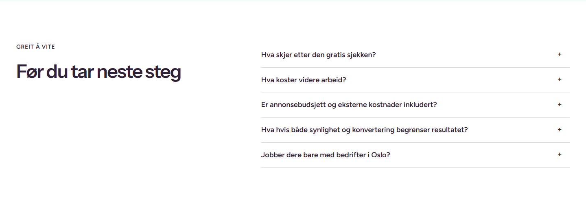
Kontaktvalg 1440px: standard / vannrett
Godkjent standard; byte-identisk før/etter: true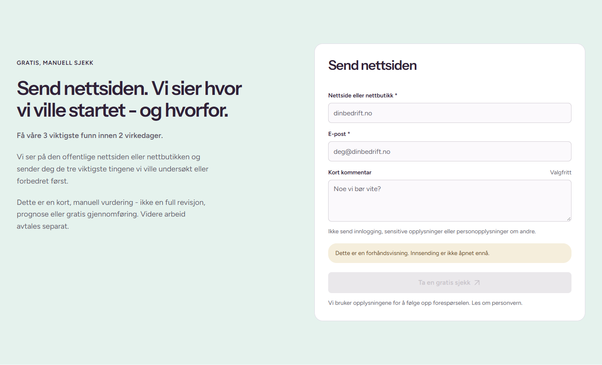
Alternativt CMS-oppsett; samme data og komponent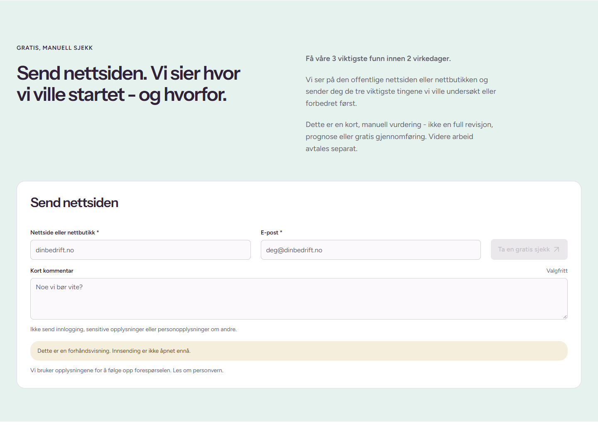
FAQ 1100px: faktisk Worker før / korrigert etter
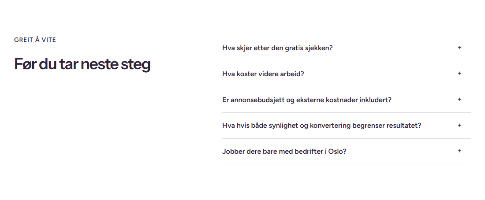

Kontaktvalg 1100px: standard / vannrett
Godkjent standard; byte-identisk før/etter: true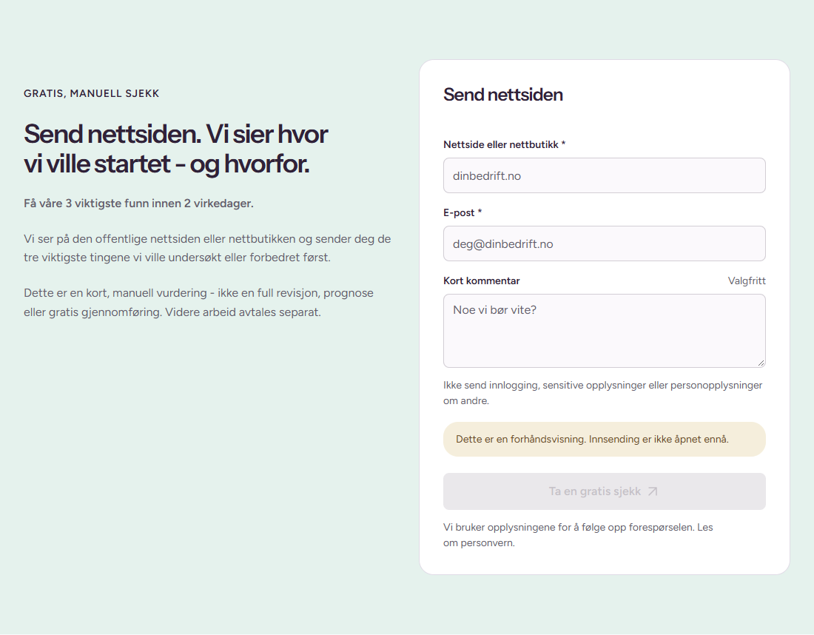
Alternativt CMS-oppsett; samme data og komponent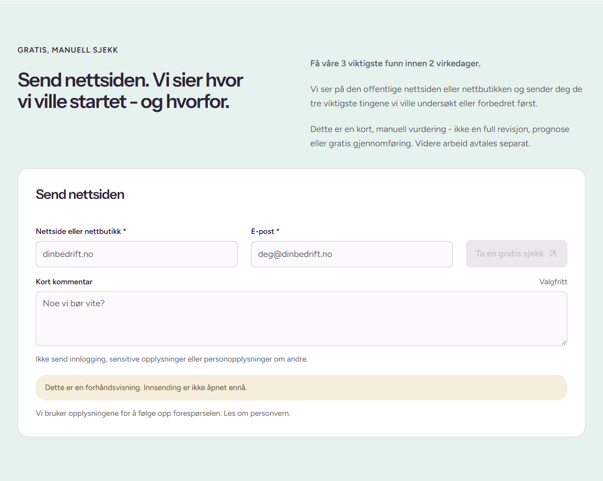
FAQ 900px: faktisk Worker før / korrigert etter
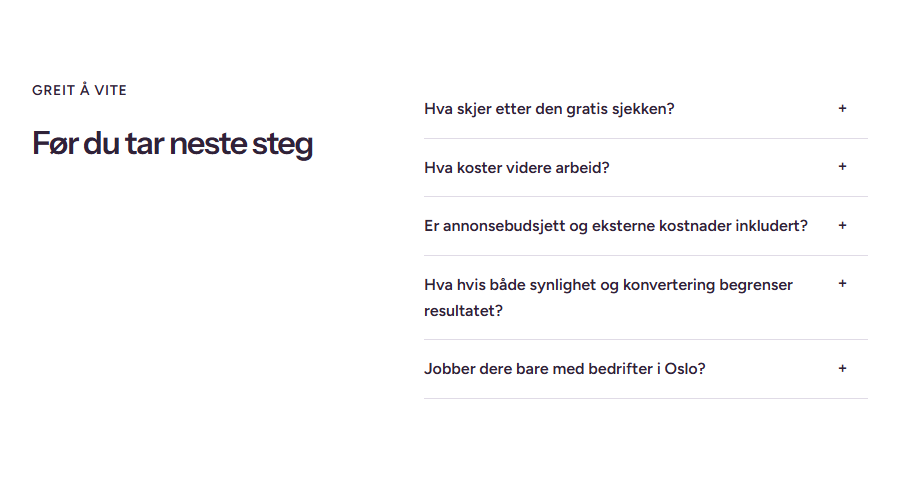

Kontaktvalg 900px: standard / vannrett
Godkjent standard; byte-identisk før/etter: true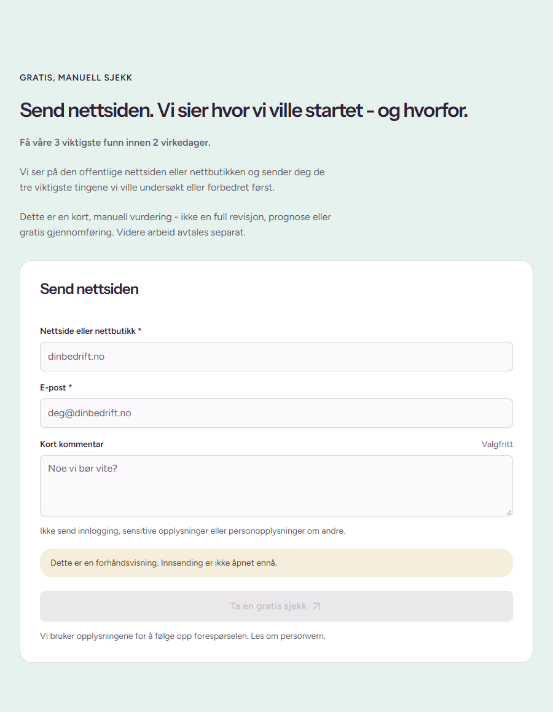
Alternativt CMS-oppsett; samme data og komponent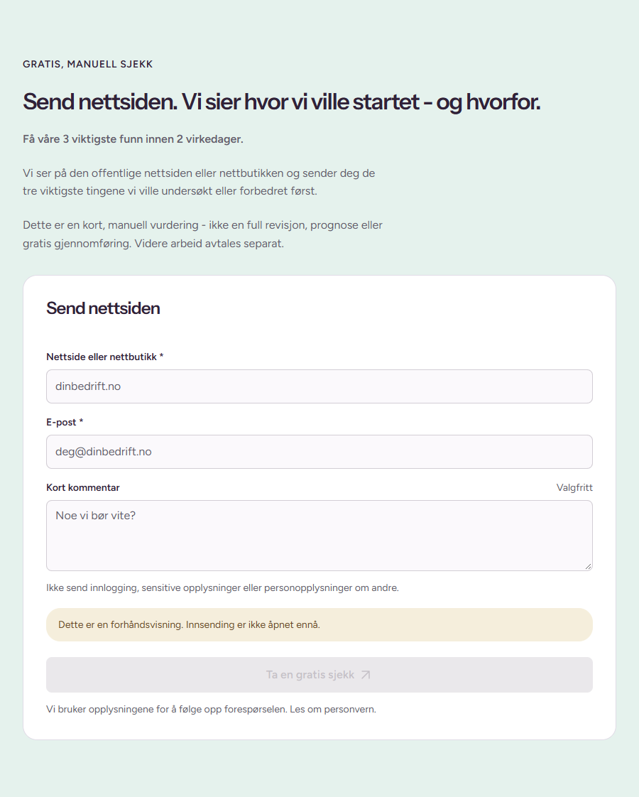
FAQ 390px: faktisk Worker før / korrigert etter
Kontaktvalg 390px: standard / vannrett
Godkjent standard; byte-identisk før/etter: true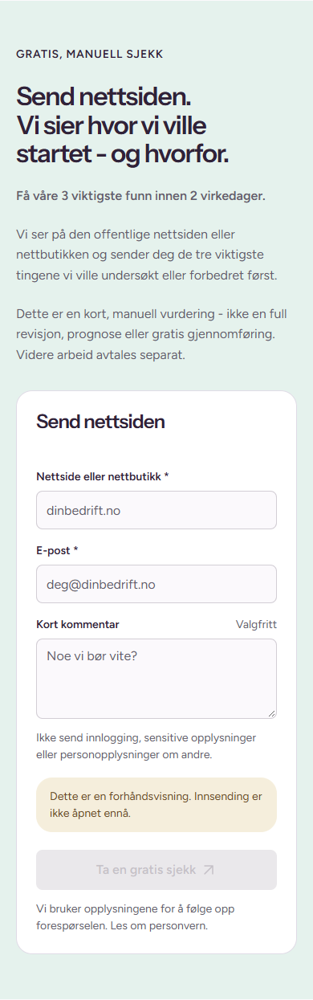
Alternativt CMS-oppsett; samme data og komponent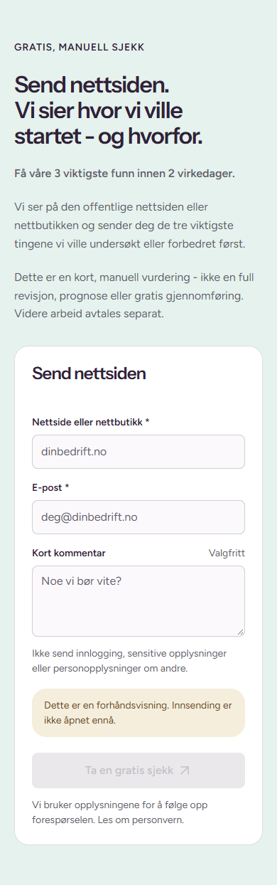
FAQ 320px: faktisk Worker før / korrigert etter
Kontaktvalg 320px: standard / vannrett
Godkjent standard; byte-identisk før/etter: true Alternativt CMS-oppsett; samme data og komponent
Alternativt CMS-oppsett; samme data og komponent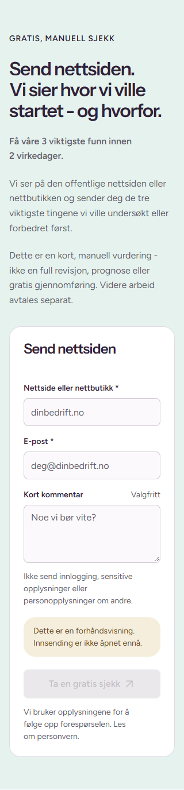